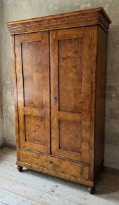

Ébénisterie
du ConflentTradition du meuble catalan de montagne


⟹ Savoir-faire du bois en pays catalan ⟸
Vallée encaissée entre le massif du Canigó et les hauts plateaux de Cerdagne, le Conflent appartient à un pays où le bois a longtemps été à la fois matériau de construction, combustible, outil agricole et matière du mobilier domestique. Les forêts et les vergers fournissaient plusieurs essences adaptées à des usages différents : le châtaignier et le chêne pour les ouvrages robustes, le noyer pour les meubles plus soignés, auxquels pouvaient s'ajouter, selon les disponibilités et les pièces à réaliser, d'autres bois locaux. Dans une économie rurale où les objets étaient faits pour durer, réparés puis transmis, le travail du menuisier occupait une place essentielle.

Dans les maisons du Conflent, le mobilier répond d'abord aux besoins de la vie quotidienne : coffres pour conserver linge et effets précieux, tables et bancs, pétrins, berceaux, puis armoires de grandes dimensions. L'armari, devenu l'une des pièces emblématiques du mobilier catalan, prend une importance particulière à l'époque moderne. Sa présence accompagne l'évolution de l'habitat et l'affirmation d'un mobilier plus spécialisé, notamment dans les foyers paysans aisés, les maisons de notables et les demeures urbaines.
Du XVIIe au XVIIIe siècle, le meuble catalan connaît une diversification remarquable. À côté des formes rurales très sobres apparaissent des meubles plus élaborés, influencés par les goûts baroque puis rococo : façades moulurées, corniches saillantes, pieds découpés, panneaux sculptés, ferrures ouvragées, placages et parfois marqueteries. Dans la Catalogne du XVIIIe siècle, la commode et les meubles à tiroirs prennent également une place croissante dans les intérieurs bourgeois et aristocratiques. Le Conflent reçoit ces influences tout en conservant des formes adaptées à la montagne, souvent plus massives et économes en décor.
La frontière entre menuiserie, ébénisterie et sculpture n'est alors pas aussi rigide qu'aujourd'hui. Le même environnement artisanal réunit charpentiers, menuisiers, tourneurs, sculpteurs, doreurs et serruriers. Les grands chantiers religieux constituent des foyers de savoir-faire particulièrement importants : les retables des églises catalanes associent architectures de bois, statues, reliefs, polychromie et dorure. Les inventaires patrimoniaux conservent de nombreux exemples de bois taillé, peint et doré dans les Pyrénées-Orientales, témoignant de cette culture technique partagée.
Le Conflent se trouve précisément au cœur de l'un des grands foyers du baroque catalan. Aux XVIIe et XVIIIe siècles, des ateliers de sculpteurs tels que ceux de Lluís Generes et de Josep Sunyer travaillent dans les vallées et autour de Prades, Vinça, Villefranche-de-Conflent ou Font-Romeu. Le monumental retable de saint Pierre de Prades, achevé en 1699 par Josep Sunyer, illustre l'ampleur que pouvait atteindre le travail du bois. Ces commandes ecclésiastiques entretenaient une main-d'œuvre hautement qualifiée et favorisaient la circulation des modèles décoratifs vers le mobilier civil.
La fabrication traditionnelle reposait sur une connaissance intime de la matière. Les bois étaient débités puis laissés à sécher longuement avant leur mise en œuvre afin de limiter retraits et déformations. Les assemblages — tenons et mortaises, rainures, chevilles, queues d'aronde pour les tiroirs — permettaient de construire des meubles solides avec peu de métal. Les surfaces pouvaient être rabotées, moulurées, sculptées, cirées ou huilées ; la ferronnerie, indispensable aux serrures, pentures et entrées de clé, ajoutait une seconde dimension artisanale à l'objet.
Le meuble avait aussi une valeur sociale et familiale. Coffres et armoires accompagnaient les dots et les mariages ; ils conservaient le linge domestique et les biens transmis d'une génération à l'autre. Leur robustesse explique que de nombreux exemplaires anciens soient encore présents dans les maisons, collections et édifices religieux. Les variations de dimensions, de moulures, de ferrures ou de décors permettent souvent de lire l'origine sociale du meuble et les influences successives qui ont traversé le pays catalan.
Au XIXe siècle, l'amélioration des transports, la diffusion du mobilier manufacturé et, plus tard, l'industrialisation de la production transforment progressivement les métiers du bois. Les ateliers ruraux doivent composer avec des meubles fabriqués en série et avec de nouvelles essences importées. L'artisanat ne disparaît pourtant pas : il se déplace vers le sur-mesure, la restauration, la copie de meubles anciens et l'aménagement intérieur, domaines où la maîtrise du bois massif et des assemblages traditionnels conserve toute sa valeur.
Au XXe siècle, l'intérêt pour le patrimoine catalan contribue à redonner une valeur culturelle à ces meubles longtemps considérés comme de simples objets domestiques. Antiquaires, musées, associations patrimoniales et artisans restaurateurs participent à leur étude et à leur sauvegarde. Aujourd'hui, l'ébénisterie du Conflent se situe ainsi au croisement de plusieurs héritages : celui du mobilier rural de montagne, celui des grands ateliers religieux baroques et celui d'une ébénisterie contemporaine attentive aux essences, à la restauration et à la transmission des gestes.
Le bois du Conflent ne ment pas : il porte la marque du massif qui l'a vu pousser.
— Tradition artisanale catalaneLe métier d'ébéniste se distingue de celui de menuisier par la maîtrise de l'assemblage : là où la menuiserie laisse au bois la liberté de ses mouvements naturels, l'ébénisterie doit au contraire neutraliser ces mouvements pour garantir la tenue du meuble dans le temps. Un savoir-faire exigeant, transmis de génération en génération dans les ateliers familiaux du Conflent.
Un bon meuble catalan se juge à ses assemblages, pas à ses ornements.
— Tradition artisanale du ConflentAujourd'hui, quelques ateliers du Conflent et du Roussillon perpétuent cette tradition, entre restauration de mobilier ancien et création contemporaine inspirée des formes catalanes traditionnelles, dans une région où la route des métiers d'art valorise ce patrimoine vivant auprès des visiteurs.
Prades capitale du Conflent, la ville et ses ateliers d'artisanat d'art constituent un point de départ naturel pour découvrir ce savoir-faire.
Vernet-les-Bains station thermale au pied du Canigó, elle conserve un patrimoine architectural et mobilier typique des villages de montagne catalans.
Massif du Canigó sommet emblématique des Pyrénées catalanes, ses forêts ont longtemps fourni le bois des ateliers du Conflent.
Villefranche-de-Conflent cité fortifiée par Vauban, elle abrite également plusieurs ateliers d'artisanat d'art, dont certains liés au travail du bois et de la pierre.